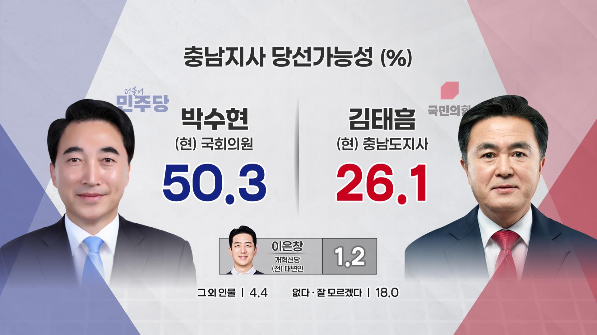

정치부
[정치현장] '충남의 아들' 대 '현직 프리미엄'... 충남지사 당선가능성, 박수현 후보 여론조사 앞서
박수현 후보 50.4%로 앞서가지만 김태흠 지사 26.1%

TJB 뉴스
6·3 지방선거를 20일 앞둔 충청남도지사 선거 정국이 요동치고 있다. 더불어민주당 박수현 후보가 초반 기세를 몰아 과반 지지율을 기록 중인 가운데, 국민의힘 김태흠 현 지사가 탄탄한 도정 성과를 바탕으로 보수층 결집과 막판 추격에 나서고 있다.
박수현 후보가 50.4%, 김태흠 지사가 26.1%를 기록했다. 더불어민주당 측은 '인물론'과 '도정 연속성'을 중시하는 유권자들이 결집하고 있음을 시사한다.
핵심 변수는 '충남·대전 행정통합' 찬반 여론이다. 결국 인구가 가장 많은 천안·아산 지역의 부동층(약 18.6%)이 누구의 손을 들어주느냐에 따라 최종 승패가 갈릴 것으로 보인다.